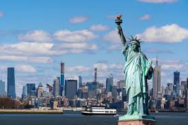

Stany Zjednoczone Ameryki to jedno z największych i najpotężniejszych państw na świecie, znane z różnorodności kulturowej, wielkich metropolii takich jak Nowy Jork, Los Angeles, oraz przyrodniczych cudów, takich jak Wielki Kanion.

Długość: 38,4 km
Typ: Most drogowy
Lokalizacja: Luizjana
Najdłuższy most nad wodą na świecie, biegnący nad jeziorem Pontchartrain, łącząc Metairie z Mandeville w stanie Luizjana.